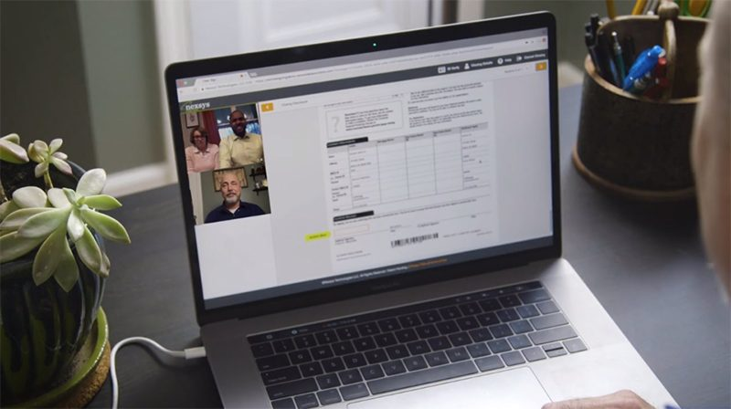
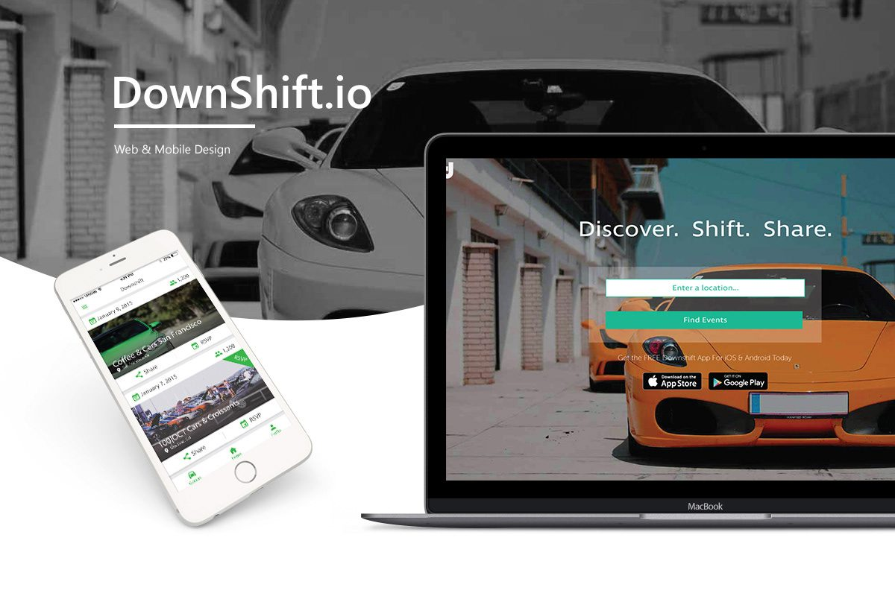
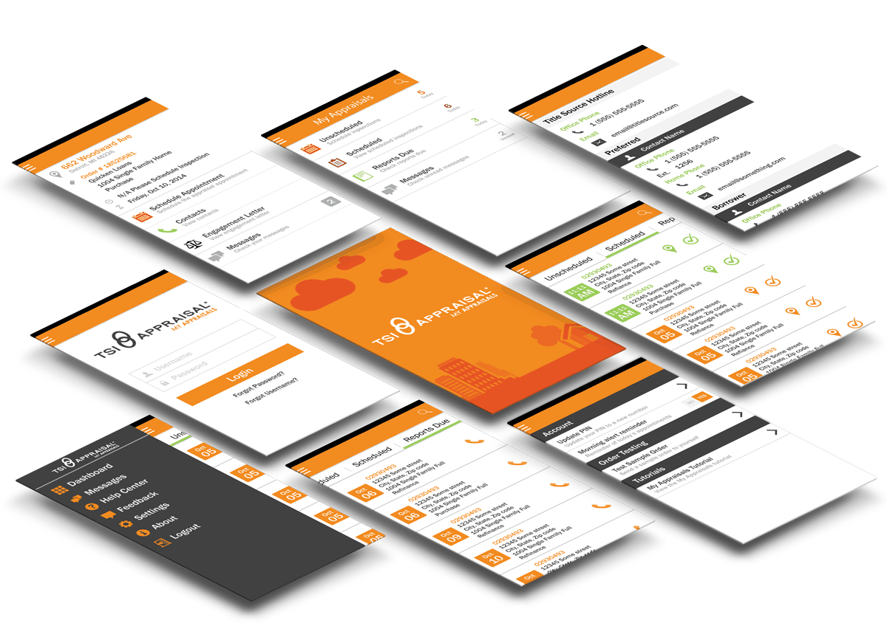
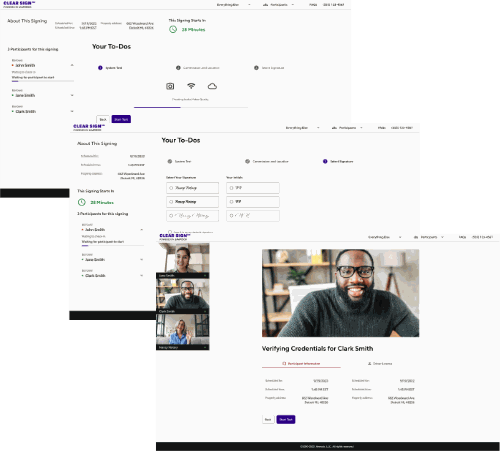
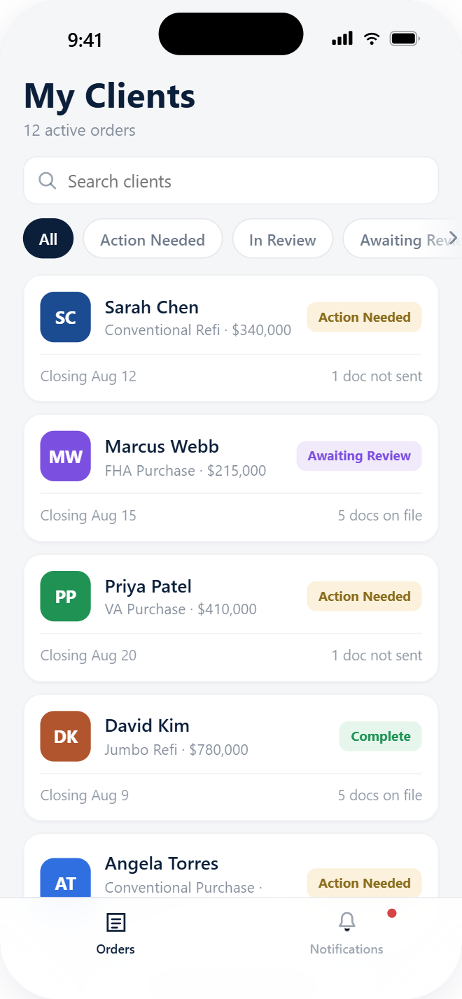
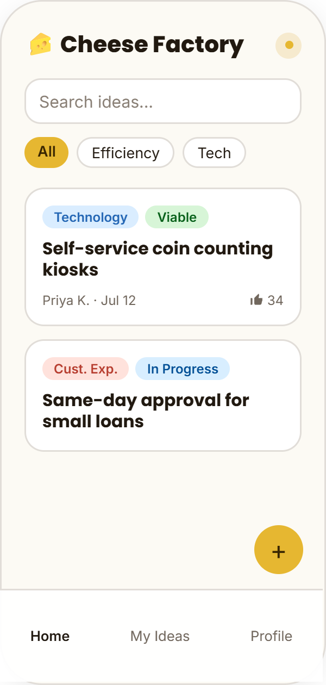

My Work
A decade of designing experiences across mortgage tech, fintech, real estate, and social platforms, grouped by the kind of problem each one solved.
01 · 3 cases
Zero-to-one products
New products taken from an empty file to launch.

eClosing Platform: From In-Person MVP to Industry-First Remote Notarization
Taking an eClosing platform from a clean-room, in-person MVP to an industry-first remote video notarization experience launched at the onset of Covid.
15% → 3% failure rate
Streamlining Automotive Event Management Through a Dual-Purpose Social Platform
Designing the MVP for a social platform that let car owners and event-goers register, follow, and share vehicles across three distinct user groups.
3 user groups, one MVP
My Appraisals: Cutting Field Worker Order Acceptance from Hours to Minutes
Streamlining how field appraisers accept and manage orders, cutting acceptance time from hours to minutes across web and mobile.
Hours → minutes02 · 2 cases
Research-led redesigns
Existing products with real users, where the work started with evaluation before any new screens.
Projecting a 40% Lift in Discoverability Through Navigation Restructure
Restructuring broker-facing navigation and product naming so thousands of daily lending decisions move faster, with more confidence.
+40% projected discoverability
Clear Sign Redesign: Reimagining a Mortgage Closing Platform
Reimagining a mortgage closing platform's Signer and Notary paths, backed by usability research and competitive analysis.
7 usability test participants03 · 1 case
Systems and accessibility
Standards work that changed how several teams build.
Hackathon work
Two mobile apps, each designed and built in a 24-hour internal hackathon.

Banker App
A mobile home base for mortgage bankers to see which documents each client still owes and follow up from anywhere. Won first place for Business Innovation.

Cheese Factory
Extending an internal idea-submission platform to mobile so team members can capture an idea the moment it occurs. Later implemented for team members to use.